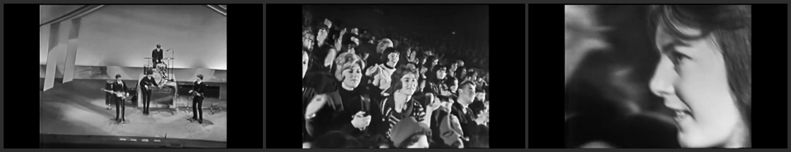
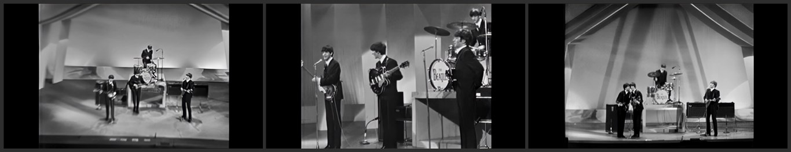

It's The Beatles
December 7, 1963
Version 1 (Reconstruction)
Songs Captured:
From Me To You (Snippet)
I Saw Her Standing There (Snippet)
All My Loving (Snippet)
Roll Over Beethoven (Snippet)
Till There Was You (Snippet)
She Loves You (Snippet)
This Boy (Snippet)
I Want To Hold Your Hand
Money (That's What I Want)
Twist And Shout
From Me To You (Instrumental)
Version 2 (BBC Version)
Songs Captured:
I Saw Her Standing There (Snippet)
All My Loving (Snippet)
Roll Over Beethoven (Snippet)
Till There Was You (Snippet)
She Loves You (Snippet)
I Want To Hold Your Hand
Money (That's What I Want)
Twist And Shout
From Me To You (Instrumental)
The entire show was recorded, but many scenes were removed due to the director's wrong choice of members, Ringo without a voice in Boys, etc...
there were many technical problems, so we only have this excerpt which is the only good part of the film.
We also have a B-Roll in master, but the quality is horrible.